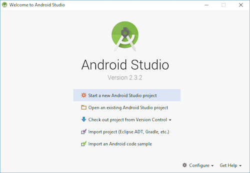
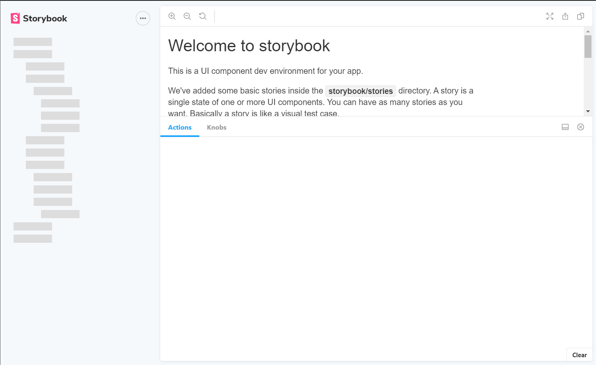
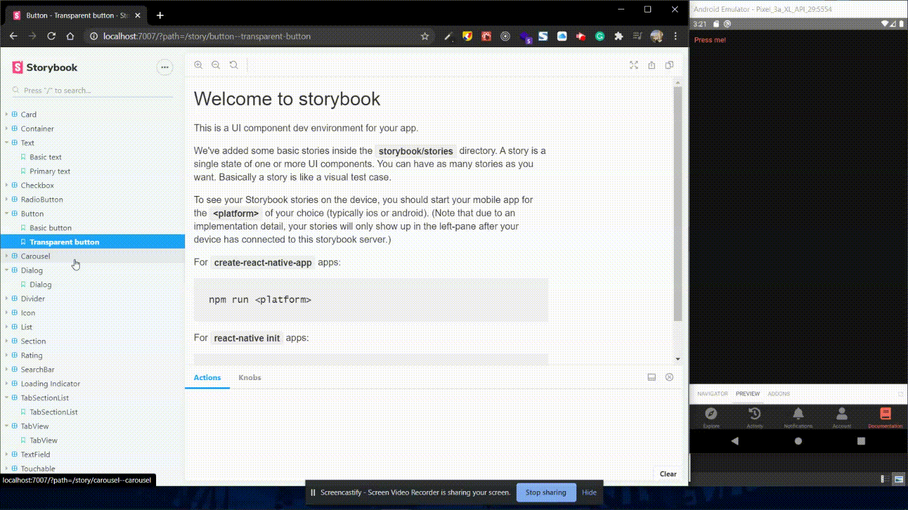

Food Star React Native App Template
Welcome To Food Star React Native App Template
Firstly, a huge thanks for purchasing this template, your support is truly appreciated!
This documentation covers the installation and use of this template and often reveals answers to common problems and issues - read this document thoroughly if you are experiencing any difficulties. If you have any questions that are beyond the scope of this document, feel free to email at jcstudio26@gmail.com.
Template Features
- Built with latest version of React Native, React Navigation and TypeScript
- Support Dark Theme / Light Theme
- Tons of amazing components built with pure react native code for the best performance
- Built-in theming system allow you to easily customize it for your business
- Clean & Simple Design
- Fully Responsive Design
- Seamless Cross-Platform, run smoothly on both iOS and Android
What Inside of Food Star & How to run the source code
Setting up the development environment
NodeJS
Make sure you have a recent version (8.11 or later) of Node installed globally. We recommend installing Node and Watchman using Homebrew. Run the following commands in a Terminal after installing Homebrew: brew install node brew install watchman If you have already installed Node on your system, make sure it is Node 8.3 or newer. Watchman is a tool by Facebook for watching changes in the filesystem. It is highly recommended you install it for better performance.
Yarn
Please follow yarn official install guide. https://yarnpkg.com/en/docs/install#mac-stable
Expo CLI
Expo CLI is a command line app that is the main interface between a developer and Expo tools.Expo CLI also has a web-based GUI that pops up in your web browser when you start your project — you can use the GUI instead of the command line interface if you're not yet comfortable using a terminal or prefer GUIs, both have similar capabilities.
To install Expo CLI, please open your terminal and run npm install --global expo-cli
Verify that the installation was successful by running expo whoami. You're not logged in yet, so you will see "Not logged in". You can create an account by running
expo register if you like, or if you have one already run expo login, but you also don't need an account to get started.
iOS Development Tools
XCode IDE
The easiest way to install XCode is via the Mac App Store. Installing Xcode will also install the iOS Simulator and all the necessary tools to build your iOS app. If you have already installed XCode on your system, make sure it is version 9.4 or newer.
Command Line Tools
You will also need to install the XCode Command Line Tools. Open XCode, then choose "Preferences..." from the XCode menu. Go to the Locations panel and install the tools by selecting the most recent version in the Command Line Tools dropdown.

Installing an iOS Simulator in Xcode
To install a simulator, open Xcode > Preferences... and select the Components tab. Select a simulator with the corresponding version of iOS you wish to use.
CocoaPods
CocoaPods is built with Ruby and it will be installable with the default Ruby available on macOS. You can use a Ruby Version manager; however, we recommend that you use the standard Ruby available on macOS unless you know what you're doing. Using the default Ruby install will require you to use sudo when installing gems. (This is only an issue for the duration of the gem installation, though.) sudo gem install cocoapods For more information, please visit CocoaPods Getting Started guide.
Android Development Tools
Java Development Kit
We recommend installing JDK using Homebrew. Run the following commands in a Terminal after installing Homebrew: brew cask install adoptopenjdk/openjdk/adoptopenjdk8 If you have already installed JDK on your system, make sure it is JDK 8 or newer.
Setup Android Development Environment
- Install Android Studio
- Download and install Android Studio. Choose a "Custom" setup when prompted to select an installation type. Make sure the boxes next to all of the following are checked:
- Android SDK
- Android SDK Platform
- Performance (Intel ® HAXM) (See here for AMD or Hyper-V)
- Android Virtual Device
- Then, click "Next" to install all of these components. If the checkboxes are grayed out, you will have a chance to install these components later on. Once setup has finalized and you're presented with the Welcome screen, proceed to the next step.
- Install the Android SDK
- Android SDK Platform 28
- Intel x86 Atom_64 System Image or Google APIs Intel x86 Atom System Image
- Next, select the "SDK Tools" tab and check the box next to "Show Package Details" here as well. Look for and expand the "Android SDK Build-Tools" entry, then make sure that 28.0.3 is selected. Finally, click "Apply" to download and install the Android SDK and related build tools.
- Configure the ANDROID_HOME environment variable
export ANDROID_HOME=$HOME/Library/Android/sdkexport PATH=$PATH:$ANDROID_HOME/emulatorexport PATH=$PATH:$ANDROID_HOME/toolsexport PATH=$PATH:$ANDROID_HOME/tools/binexport PATH=$PATH:$ANDROID_HOME/platform-tools
Android Studio installs the latest Android SDK by default. Building a React Native app with native code, however, requires the Android 9 (Pie) SDK in particular. Additional Android SDKs can be installed through the SDK Manager in Android Studio. The SDK Manager can be accessed from the "Welcome to Android Studio" screen. Click on "Configure", then select "SDK Manager".
The SDK Manager can also be found within the Android Studio "Preferences" dialog, under Appearance & Behavior → System Settings → Android SDK. Select the "SDK Platforms" tab from within the SDK Manager, then check the box next to "Show Package Details" in the bottom right corner. Look for and expand the Android 9 (Pie) entry, then make sure the following items are checked:
The React Native tools require some environment variables to be set up in order to build apps with native code.
Add the following lines to your $HOME/.bash_profile or $HOME/.bashrc config file:
.bash_profile is specific to bash. If you're using another shell, you will need to edit the appropriate shell-specific config file.
Type source $HOME/.bash_profile to load the config into your current shell. Verify that ANDROID_HOME has been added to your path by running echo $PATH.
Folder Structure
src folder
- assets
- components
- context
- custom-hooks
- data
- styles
- utils
Now, we will discuss about each and every folders and their tasks.
assets
In assets folder, you will all of the images are kept on the basis of the specific page.
data
In data folder, you will find all of the data uses in this template.
components
components folder is most importantly use, you will find all the components used in this template.
- common -> Components in common folder are context providers and other handy reusable items.
- elements -> We have written these core components to make the developer's life much easier.
- routes -> Here all routing related components like a Tab Navigator and Stack Navigators for each tab page are includded.
- screens -> Here is all the screens we used in our template like Login, Home, Place Detail, Dish Detail, Checkout, Settings etc.
context
All the context related components like Auth Context, Cart Context and Theme Context will be here
custom-hooks
Inside this folder are all the handy reusable custom hooks
styles
Here all theme styling related functions are includded
utils
Inside this folder are all the util functions like number formatter and google map's custom theme styles
Running your React Native application
Firstly, inside your React Native project folder, you need to run yarn install to install all the required packages of the apps
Running on a simulator
Run yarn start or you can also run yarn ios || yarn android
Running on a device
If you want to run the app on an actual physical iOS/Android device, please follow the instruction Running On Device using Expo Go.
Running Storybook server
Storybook is a development environment for UI components. It allows you to browse a component library, view the different states of each component, and interactively develop and test components.
Firstly, you need to run yarn storybook to start the storybook server
Then open your browser and go to http://localhost:7007, it will give you the following screen:
You'll find that the left-pane of storybook is loading at this time because it's trying to connect to an iOS or Android emulator
To see your Storybook stories on the device, you have to start the app for the of your choice (iOS or Android)
Now let's try to run the app on a simulator by running yarn android or yarn ios
Now you can see that all the components are loaded in the left-pane of our storybook
To play with them, on your simulator, press either of the 3 buttons to login, then select Documentation tab at the bottom
If you play around with this you notice that you can control the view which is being shown in the emulator / simulator from the browser. Neat right! ⭐️ It's a nice feature which makes navigating your component library on a device very fast and easy.
Main Stacks We Used in Food Star
- Yarn.
- React Native.
- Expo.
- Type Script.
- Story Book.
Source and Credit
- yarn
- expo
- react-native
- typescript
- storybook
- react-navigation
- react-native-bouncy-checkbox
- react-native-community/datetimepicker
- react-native-community/masked-view
- react-native-appearance
- react-native-confirmation-code-field
- react-native-geolocation-service
- react-native-gesture-handler
- react-native-maps
- react-native-modal
- react-native-ratings
- react-native-reanimated
- react-native-safe-area-context
- react-native-screens
- react-native-snap-carousel
- react-native-step-indicator
- react-native-tab-view
- react-native-vector-icons
- react-native-async-storage/async-storage
- lottie-react-native
- accounting
- faker
- lottie-ios
- Flaticon
Images used in the preview that you can buy on Envato Elements
- Buddha bowl quinoa salad with chicken and vegetables on black
- Grilled pork steaks in frying pan on dark background. Top view, overhead, copy space
- Fresh pizza
- Delicious hamburger with cheese
- Fresh ripe red and yellow cherry
- Flat-lay of healthy dinner table setting with vegetarian appetizers
- Penne pasta in tomato sauce with meat, tomatoes decorated with pea sprouts on a dark table. Top view